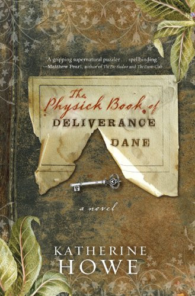

Vanderbilt
Narrative nonfiction on family, power, and American wealth.
Books
Pilot migration includes representative detail pages and route structure for full catalog migration.
Narrative nonfiction on family, power, and American wealth.
Narrative nonfiction on one of America's defining dynasties.

Historical fiction with roots in Salem and archival discovery.
A modern story that echoes the dynamics of historical panic.

A novel set against social upheaval and private grief.
Contemporary supernatural suspense tied to urban history.
Linked to live site for this pilot; local route migration planned next phase.
Linked to live site for this pilot; local route migration planned next phase.